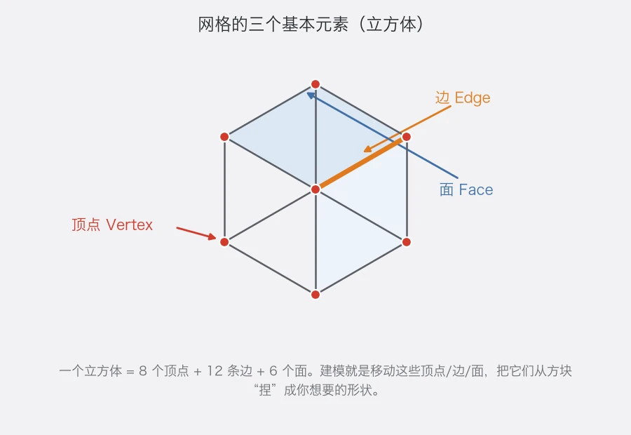
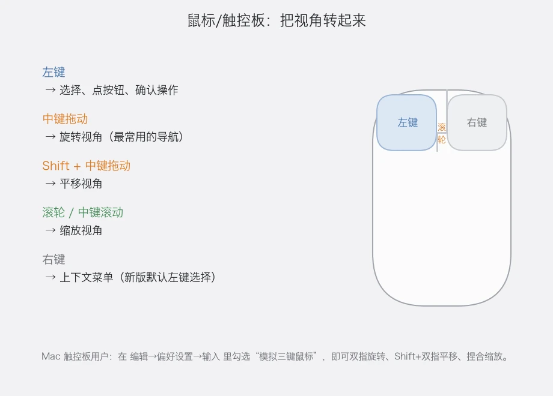
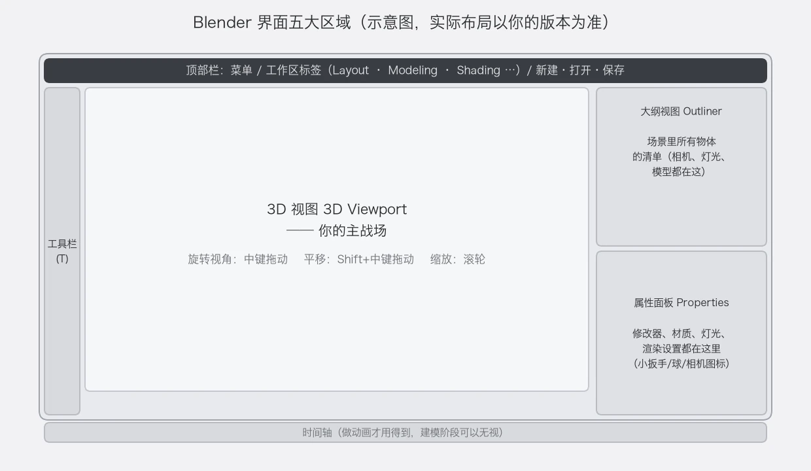
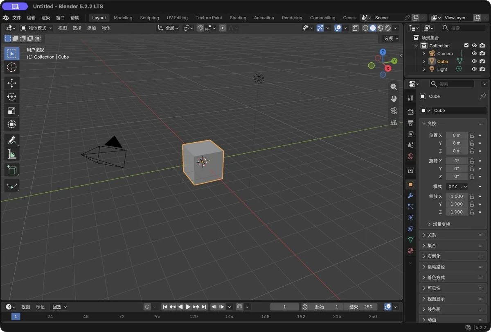
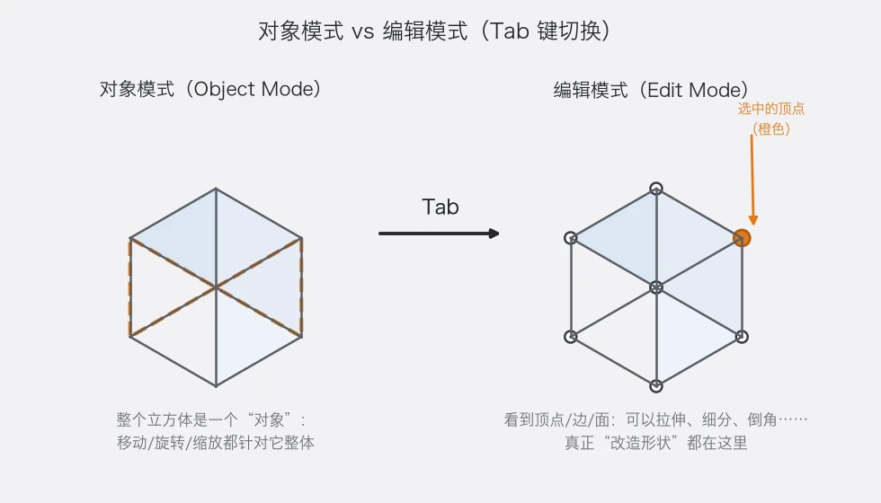
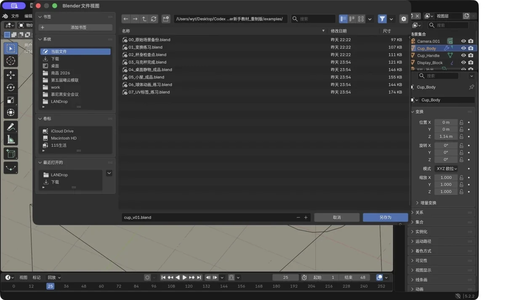

第 1 章 认识 Blender
场景：你刚装好 Blender，双击打开——一个灰色世界，中间一个立方体，旁边一堆看不懂的按钮。别慌，这一章结束时，你能自由地在里面"飞"，并且知道屏幕上每一块区域是干什么的。
学完你会
读完这一章，你会知道屏幕上每一块区域是干什么的，能用鼠标在三维空间里自由"飞行"——旋转、平移、缩放视角都不再迷路；也会第一次看清 3D 建模的本质：说到底，你操作的不过是一个个小小的顶点、边和面。最后，动手保存一份文件，给这段旅程留下第一个脚印。
核心概念 1：3D 建模到底在做什么？
先破掉一层神秘感：3D 建模，就是在电脑里"捏泥巴"。
任何 3D 模型的外壳，都是一张网格（Mesh）。网格听起来复杂，但拆开来只有三种零件：

图 6 一个立方体 = 8 个顶点 + 12 条边 + 6 个面
顶点（Vertex），就是空间里的一个点，它是网格的最小单位；两个顶点连成一条线，就是边（Edge）；几条边合围，圈出一个面（Face）——模型的外壳表面，就是由一个个面拼出来的。
你做出的所有建模操作，归根结底都在这三件事里打转：移动顶点、增删边、拉扯面。网上那些酷炫的几十万面的大模型，也不过是这条规则被重复了几十万次而已。
Blender 里的第一节"砍柴课"，就是学会在 3D 空间里自由观察你的泥巴——所以下面我们先练视角操作，再认识界面。
跟着做 1：把视角转起来
打开 Blender，屏幕中央那块最深色的区域就是 3D 视口（3D Viewport），里面有一个默认立方体、一盏灯和一台相机。你之后 90% 的时间都会花在这里。
要"飞"起来，只需要鼠标和几个按键——鼠标三键就是你的驾驶舱：

图 7 三键鼠标的四种用法，这是全教材最高频的操作
| 操作 | 效果 |
|---|---|
| 中键拖动 | 旋转视角（围着场景转圈看） |
| Shift+中键拖动 | 平移视角（视线上下左右挪） |
| 滚轮 | 拉近 / 拉远 |
| 左键 | 选择物体 |
| 右键 | 呼出上下文菜单 |
理论讲完了，动手练十次：按住中键拖一拖，让视角围着立方体转起来；按住 Shift+中键拖一拖，把立方体挪到画面正中；滚轮前后滚，凑近再看看它；最后左键点一下立方体——它会亮起一圈橙色描边，这就是"被选中"的样子。
💡 触控板用户：菜单 编辑 → 偏好设置（Preferences）→ 输入（Input）→ 勾选"模拟三键鼠标（Emulate 3 Button Mouse）"。之后：双指拖动 = 旋转，Shift+双指拖动 = 平移，捏合 = 缩放。
除了自由拖动，还有一组"标准机位"按键，做精确操作时离不开（没有小键盘的笔记本：偏好设置 → 输入 → 勾选"模拟小键盘 Emulate Numpad"）：
| 按键 | 视角 |
|---|---|
小键盘 1 |
正前方 |
小键盘 3 |
正右侧 |
小键盘 7 |
正上方 |
小键盘 0 |
切换到相机视角（渲染出的画面就是这个视角） |
小键盘 5 |
正交视图 / 透视图 切换 |
Home |
视角全览（把场景里所有东西框进画面） |
按小键盘 1、3、7 各试一次，体会"正对着看"的感觉；再按 Home 全览一次——如果刚才转晕了，这招一键回魂。顺便按一下小键盘 5 切换正交/透视：透视下近大远小（像眼睛看到的），正交下远近一样大（像工程图纸）。
跟着做 2：认识界面五大区域
把 Blender 的主界面拆开看，其实就是五个区块，各管一摊事：

图 8 五大区域示意图（实际布局以你的版本为准，区域划分完全一致）
| 区域 | 位置 | 干什么的 |
|---|---|---|
| 3D 视图（Viewport） | 正中央 | 你的主战场：观察、建模、摆场景 |
| 大纲视图（Outliner） | 右上 | 场景里所有东西的清单：相机、灯、每一个模型都在这里列出 |
| 属性面板（Properties） | 右下 | 参数大本营：修改器、材质、灯光设置、渲染设置……都靠这排小图标切换 |
| 工具栏（Toolbar） | 左侧（按 T 收放） |
当前可用的工具（选择、移动、添加等） |
| 顶部栏 + 时间轴 | 最上方 / 最下方 | 新建打开保存在工作区标签那边；时间轴是做动画才用的 |

图 9 真实软件截图（Blender 5.2 中文版）：对照上面的示意图——你打开软件后看到的就长这样
对着这两张图做两件小事，把它们认下来：鼠标悬停在大纲视图上，你会看到三个条目：Camera（相机）、Cube（立方体）、Light（灯）。左键点一下 Cube——注意看，3D 视口里的立方体同步被选中了。这个面板以后会越来越重要，物体一多，全靠它管理。然后数一数属性面板那排竖排小图标：相机图标 = 渲染设置，小球图标 = 材质，蓝色扳手 = 修改器。本章先不用记，知道它们在哪就够了。
💡 顺带认识一个按钮：3D 视口左上角有个下拉框，现在写着"物体模式（Object Mode）"。以后你会经常切到"编辑模式（Edit Mode）"，现在先不动它。
核心概念 2：物体模式 vs 编辑模式
请理解这组概念，它是 Blender 的世界观：

图 10 对象模式管"整体"，编辑模式管"内部"
物体模式（Object Mode）把整个立方体当作一个对象看待：移动、旋转、缩放，都是整体挪动——像搬一张桌子。**编辑模式（Edit Mode）**则是进到内部去，看到顶点、边、面，去拉伸、挤压、倒角——像木匠修改桌子的结构。
Tab 键在两者之间切换（记得先选中立方体，并且鼠标要在视口里）。现在可以试一下：选中立方体 → 按 Tab → 看到 8 个顶点和线框 → 再按 Tab 切回来。本章你只需要知道有这么两扇门；第 3 章才真正进去干活。
跟着做 3：第一次保存
黑客都懂一个道理：没保存的东西，等于不存在。趁现在场景还是干净的，把"保存"养成肌肉记忆：
- 按
Ctrl+S（或 文件 → 保存）。第一次保存会让你选位置和文件名，存成.blend文件——这是 Blender 的工程文件，模型、材质、灯光、场景全部打包在里面； - 保存后你可能会注意到旁边多了一个
xxx.blend1文件——这是 Blender 自动生成的上一版备份，是特性不是 bug，别删，误删过文件的人都感谢它； - 关于"自动保存"：Blender 每隔几分钟会悄悄存一份副本，在 文件 → 恢复 里可以找回。但别依赖它，养成
Ctrl+S的手癖：改几步存一次，这是建模人的安全带。
💡 另存新版本：做重要改动前，按 Ctrl+Shift+S（另存为）存一个新名字或新编号，比如 作品A_v1.blend、作品A_v2.blend。翻车了随时退回上一版。

图 11 第一次保存：先看清"位置"再点保存——别存进自己都找不到的地方
新手常见坑
| 坑 | 说明 | 对策 |
|---|---|---|
| 快捷键按了没反应 | 快捷键只对鼠标所在区域生效 | 先点一下 3D 视口再按 |
| 转晕了找不到物体 | 视角飞到了奇怪的地方 | 按 Home 全览；或选中小键盘 1 回正前方 |
| 左键点不中物体 | 点到了别的物体前面 | 放大再点；或在大纲视图里直接点名字选中 |
| 删了东西想找回 | Ctrl+Z 撤销有步数限制；关文件后就没了 |
Ctrl+Z 及时撤；关文件前的操作靠 .blend1 备份救 |
| 界面被拖乱了 | 不小心拖动了区域边界或标题栏 | 文件 → 默认 → 加载工厂设置（会重置自定义设置） |
| 用中文界面看不懂网上教程 | 网上教程的术语多是英文 | 对照附录 C 术语表；想切换语言：编辑 → 偏好设置 → 界面 → 翻译 |
最后再送你一把"万能钥匙"：F3。想找某个功能但不知道它藏在哪？按 F3 打开操作搜索框，直接输入关键词（比如 "bevel"），Blender 会帮你把对应的命令找出来。这一下，能解决 80% 的"这功能在哪"问题。
过关标准
动手做完下面三件事，才算过这一章：
- 我能用中键 /
Shift+中键/ 滚轮自由转、移、缩视角，迷路了按Home一键找回； - 我能说出界面五大区域各自管什么，并用
Tab体验过物体 / 编辑两种模式的区别； - 我保存过一次文件，能说出它躺在哪个文件夹里。
自检题
- Blender 界面五大区域分别是什么？除了"3D 视图"，各用一个词概括其职能。
- 用鼠标把视角转到物体左后方，再拉近——写出你的鼠标操作序列。
- "移动顶点"和"移动整个物体"分别发生在哪个模式？
- 忘记某个功能藏在哪个菜单里，按哪个键搜索？
- 保存后的
.blend1文件是什么？可以删吗？
答案见文末。
自检题答案
- 3D 视图（观察建模）、大纲视图（管物件清单）、属性面板（管参数）、工具栏（放工具）、顶部栏/时间轴（管文件与动画）。
- 中键拖动旋转到左后方 → 滚轮向前拉近。（触控板对应：双指拖动 + 捏合）
- 移动顶点在编辑模式；移动整个物体在物体模式。
F3（操作搜索）。- 是上一次保存的自动备份；建议保留，出事故时能救回一版。
小结
这一章没有"作品"，但拿到的全是底层功夫：建模的本质是操作网格的三元素——顶点、边、面；看世界靠"导航三件套"——中键旋转、Shift+中键平移、滚轮缩放，Home 全览、小键盘 1/3/7 换标准机位；干活分两个模式——物体模式管整体，编辑模式管结构，Tab 来回切。
再顺手收下三个安全习惯：Ctrl+S 常按，.blend1 别删，动大手术之前先"另存为"一个新版本。
下一章，我们练"驾驶技术"——让你把任何一个物体，精确地放到任何你想要的坐标上。